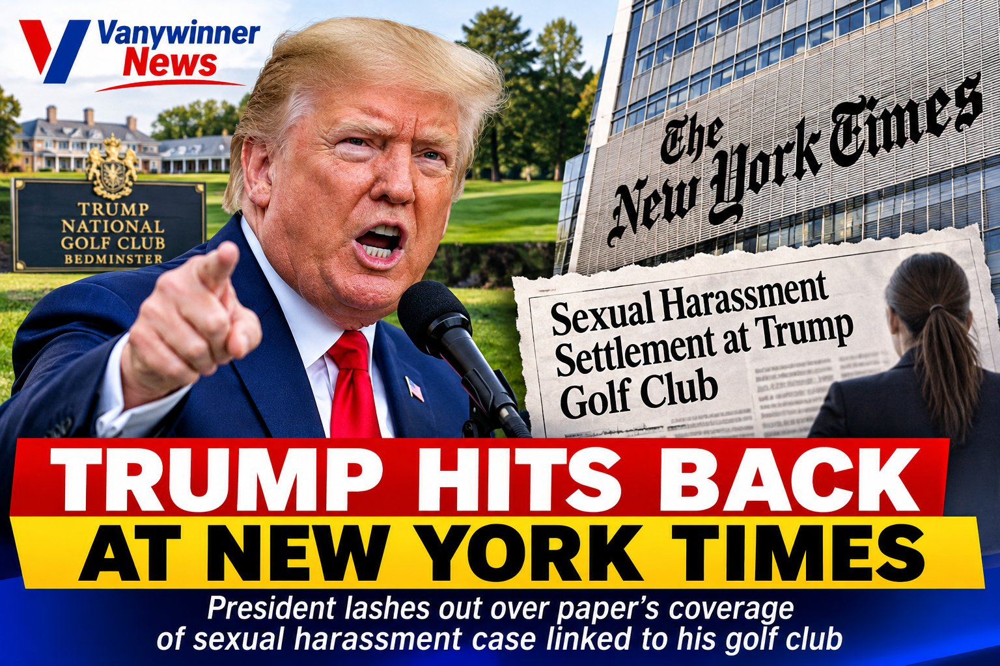

Trump Blasts New York Times Over Sexual Harassment Case Linked to His Golf Club
News
Washington, D.C. – President Donald Trump has launched a fresh attack on The New York Times, accusing the newspaper of misleading readers in its coverage of a sexual harassment case involving a former waitress at his golf club in Bedminster, New Jersey.
In a post on his Truth Social account on Wednesday, November 11, Trump criticised the newspaper for reporting on the settlement of a lawsuit brought years ago by a former employee at Trump National Golf Club.
Trump argued that the newspaper had failed to make an important distinction: he was not personally involved in the lawsuit and was not accused of committing the alleged harassment.
The controversy follows reports that New Jersey's Office of Attorney Ethics has recommended disciplinary action against Alina Habba Mildon, Trump's former personal lawyer, over her handling of the settlement involving former waitress Alice Bianco.
Bianco alleged that she experienced sexual harassment by a supervisor while working at the golf club in 2021. She also accused Habba of misleading her into signing a settlement agreement containing a non-disclosure provision that allegedly violated New Jersey law.
According to the ethics complaint, the golf club agreed to pay Bianco $15,000 in an initial settlement. The complaint raises concerns about Habba's conduct in the negotiations, including an alleged conflict of interest and the circumstances under which Bianco obtained legal representation.
Trump was not named as a defendant in Bianco's original lawsuit. The allegations primarily concerned her supervisor, the golf club's handling of the dispute and Habba's role in the settlement.
Trump's latest remarks have therefore shifted attention towards how news organisations distinguish between allegations involving a business associated with a public figure and allegations against the individual personally.
The ethics proceedings could create further scrutiny of Habba, who previously served as one of Trump's most prominent legal representatives.